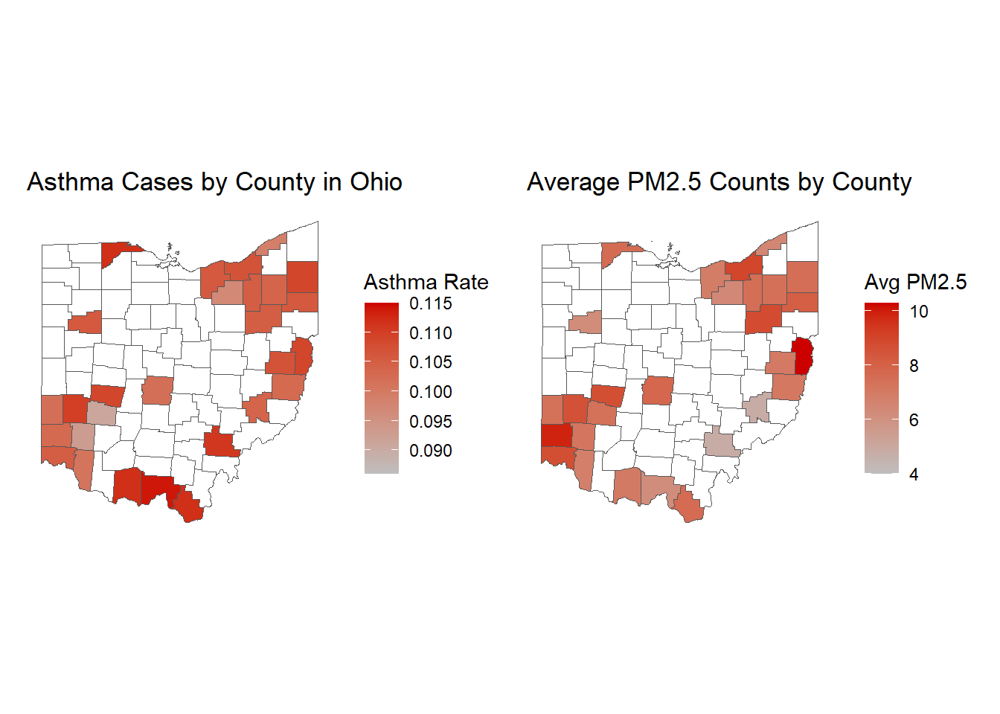

Asthma is a chronic respiratory condition that affects millions worldwide, characterized by airway inflammation and difficulty breathing. Environmental factors, including air pollution, have been widely studied as potential contributors to asthma incidence and exacerbation. Fine particulate matter (PM2.5)—tiny airborne particles measuring less than 2.5 micrometers in diameter—can penetrate deep into the lungs and has been associated with various respiratory illnesses.
Prior studies suggest that high PM2.5 concentrations may trigger asthma attacks, worsen symptoms, and lead to increased emergency hospital visits. However, the direct correlation between long-term exposure to PM2.5 and asthma case prevalence remains debated. Other environmental and socioeconomic variables—such as temperature fluctuations, pollen exposure, urbanization, and healthcare access—may confound the relationship, making PM2.5 only a partial predictor.
library(duckdb)
Warning: package 'duckdb' was built under R version 4.4.3
Loading required package: DBI
library(DBI)library(tigris)
Warning: package 'tigris' was built under R version 4.4.3
To enable caching of data, set `options(tigris_use_cache = TRUE)`
in your R script or .Rprofile.
library(sf)
Linking to GEOS 3.12.1, GDAL 3.8.4, PROJ 9.3.1; sf_use_s2() is TRUE
library(ggplot2)library(dplyr)
Attaching package: 'dplyr'
The following objects are masked from 'package:stats':
filter, lag
The following objects are masked from 'package:base':
intersect, setdiff, setequal, union
library(patchwork)
Lets connect to the database and dive into the data!
# Make a connection to the database con <-dbConnect(duckdb::duckdb(), "asthma_air_quality.db")# Write a query to see whats in the database tables <-dbListTables(con)# Check out the tables asthma <-dbGetQuery(con, "SELECT * FROM asthma")air <-dbGetQuery(con, "SELECT * FROM air_quality")# Now I want to do a join to bring in the air_quality table into the asthma table for graphing air_asthma <-dbGetQuery(con, "SELECT aq.year, a.county, a.state, aq.fips_code, aq.ave_pm2_5, a.asthma_casesFROM air_quality AS aqINNER JOIN asthma AS aON aq.year = a.year AND aq.fips_code = a.fips_codeORDER BY aq.year, aq.fips_code;")
Now that we have all the data in one place we can examine the relationship between PM2.5 and asthma cases. We can run a simple statistical model to check for correlation
# Create linear modelmodel_asthma <-lm(asthma_cases ~ ave_pm2_5, data = air_asthma)print(summary(model_asthma))
Call:
lm(formula = asthma_cases ~ ave_pm2_5, data = air_asthma)
Residuals:
Min 1Q Median 3Q Max
-0.0173471 -0.0035094 -0.0002083 0.0045616 0.0115507
Coefficients:
Estimate Std. Error t value Pr(>|t|)
(Intercept) 0.1045011 0.0035763 29.220 <2e-16 ***
ave_pm2_5 -0.0001461 0.0004916 -0.297 0.767
---
Signif. codes: 0 '***' 0.001 '**' 0.01 '*' 0.05 '.' 0.1 ' ' 1
Residual standard error: 0.006311 on 106 degrees of freedom
Multiple R-squared: 0.0008324, Adjusted R-squared: -0.008594
F-statistic: 0.08831 on 1 and 106 DF, p-value: 0.7669
Key Takeaways - The coefficient for ave_pm2_5 is -0.0001461, which is very close to zero, meaning PM2.5 has little impact on asthma cases in this model.
The p-value for ave_pm2_5 is 0.767, which is much greater than the standard threshold for significance (< 0.05). This indicates that PM2.5 is not a significant predictor of asthma cases.
The intercept (0.1045) is highly significant (p < 2e-16), meaning the baseline rate of asthma cases is important in the model but PM2.5 does not strongly explain variations.
But can this really be true? Research would say probably not. The culprit could be omitted variable bias. Other environmental or socioeconomic factors could be influencing asthma cases (e.g., allergens, temperature, humidity, healthcare access).
Lets visualize the two on map
# Get county boundaries for Ohioohio_counties <-counties(state ="OH", cb =TRUE, class ="sf")
# Merge asthma data with county mapohio_map <- ohio_counties %>%left_join(air_asthma, by =c("COUNTYFP"="fips_code")) # Plot asthma cases on Ohio countiesplot_1 <-ggplot(ohio_map) +geom_sf(aes(fill = asthma_cases)) +scale_fill_gradient(low ="grey", high ="red3", na.value ="white") +theme_minimal() +theme(panel.grid.major =element_blank(), panel.grid.minor =element_blank(),axis.text =element_blank()) +labs(title ="Asthma Cases by County in Ohio",fill ="Asthma Rate")# Plot average pm2.5 counts by countyplot_2 <-ggplot(ohio_map) +geom_sf(aes(fill = ave_pm2_5)) +scale_fill_gradient(low ="grey", high ="red3", na.value ="white") +theme_minimal() +theme(panel.grid.major =element_blank(), panel.grid.minor =element_blank(),axis.text =element_blank()) +labs(title ="Average PM2.5 Counts by County",fill ="Avg PM2.5")combined_plots <- plot_1 + plot_2print(combined_plots)

Conclusion
This study examines the spatial distribution of asthma cases across Ohio counties while considering air quality as a potential influencing factor. By mapping county-level asthma rates alongside air pollution data, the analysis highlights possible environmental health disparities. However, omitted variable bias presents a significant challenge, factors such as socioeconomic status, access to healthcare, genetic predisposition, and indoor air pollution may also contribute to asthma prevalence but were not included in this analysis.
While PM2.5 pollution is often cited as a key environmental determinant of respiratory health, failing to account for additional confounders may lead to biased estimates of its effect. Future research should incorporate these missing variables to refine the relationship between air quality and asthma outcomes. Additionally, policy recommendations based solely on air pollution reduction may be insufficient unless broader social determinants of health are also addressed.
Expanding this work by integrating demographic, healthcare access, and multi-pollutant data would provide a more comprehensive understanding of asthma risk factors. By mitigating omitted variable bias, the analysis can better inform public health initiatives aimed at reducing asthma disparities across Ohio.